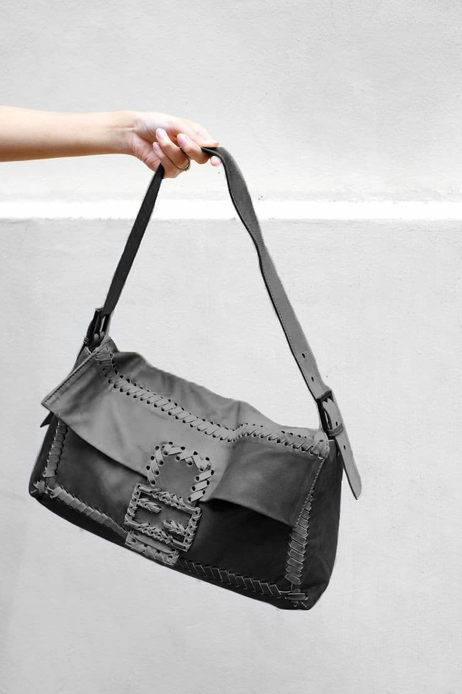

Nouvel article
Fendi baguette whipstitch
Sac à bandoulière en cuir, bandoulière en cuir plat, rabat sur le devant avec fermeture à bouton pression magnétique, et poches intérieures. Il porte une cote B + condition.un peu rayé ffbb_control Le dos extérieur est décoloré. Le fond extérieur est taché. Les coins extérieurs sont décolorés et pelés. La façade est décolorée. La poignée extérieure est fissurée, décoloré et hors de forme. La face extérieure est décolorée. La doublure intérieure est décolorée et tachée. La poche intérieure est tachée.
Dimensions:Longueur : 29 cmLargeur: 45 cmProfondeur: 8 cmLaissez tomber: 45Inclusions: DustbagCouleur blancheMatériel: cuir x veauPays d'origine: Italie
“Apprenez en plus sur vos model de sacs préférer en une simple recherche, grâce à une communauté de passionnée qui partagent leur savoir sur l’univers de la maroquinerie de luxe”
“Vous êtes un expert sur un model de sac? Intégrez la communauté en nous partageant vos connaissances qui nous sont si précieuses”
QUI SOMMES NOUS?
WikipBag est né de la volonté d’accompagner les utilisateurs de seconde main de luxe dans leurs achats avec leur offrant un outils leur permettant de comparer et d’en apprendre plus sur tout les models de sacs de créateurs qui furents mis sur le marcher. Vous y trouverais des informatins souvent mis à jours sur les aspects hisoriques mais aussi technques issus des caracteristiques des sacs. Wikipbag à pour de regrouper les passionnées de maroquineries autour du partages de savoirs, c’est pourquoi cette platforme est colaborative et vous permets de completer des pages produits avec des informations que vous pourriez venir agrémenter. Car le partage de savoir fait une force pour tous, venez apprendre et comprendre sur Wikipbag l’univers qui entoure votre sac préféré. L’équipe Wikipbag
Récemment recherché
sac selleria 1997

gucci diana
Hermes Trim
fendi cabas roll bag
Anna selleria fendi
Fendi Selleria Bag 2023
anna cuir grainé rouge